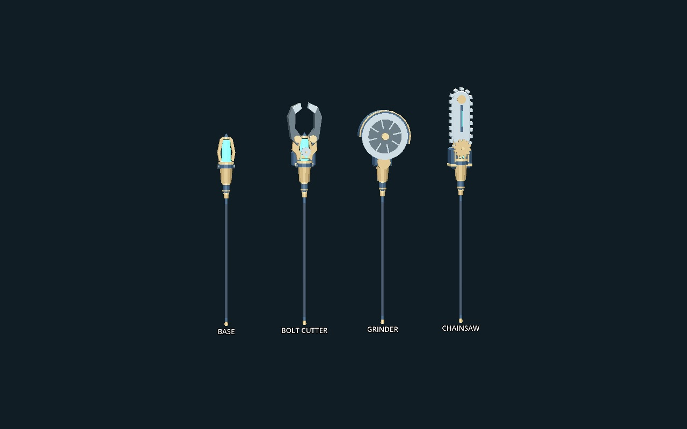
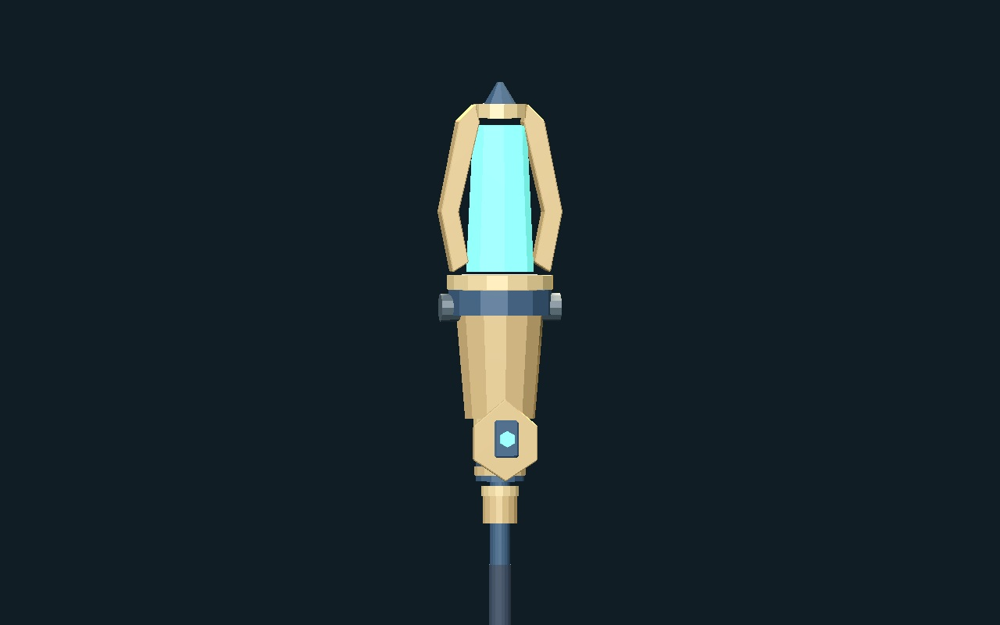

MACHINERY WITCH / STAFF v1
하나의 지팡이, 세 가지 공구
황동·남색 자루와 청록 동력 코어를 공통으로 유지합니다. 공구 부품은 빛과 함께 나타나 결합하고, 매개체 장식은 별도 부착부에 남습니다. 선택한 방향으로 만든 첫 3D 검토 후보입니다.

실제 시험판에서 보기
형태와 장식 부착부

예제 인장 장식은 코어 아래에 붙습니다. 공구를 바꾸거나 마나가 소진되어도 남고, 손이 미끄러지는 자루 구간에는 들어가지 않습니다. 좌우 추가 부착 지점도 데이터로 예약했습니다.
이번 후보의 기준
| 부분 | 역할 |
|---|
| 공통 자루 · 코어 | 기존 오른손 부착점·양손 간격·미끄러짐 트랙 유지 |
| 공구 부품 | 약 0.22초 생성·조립 / 약 0.16초 해체·소멸 |
| 빠른 공격 | 기존 타격 시점까지 조립만 앞당김; 공격 시간·피해·비용 유지 |
| 매개체 장식 | 공구와 독립된 외형 프로필; 장비 UI·아이템 연결은 후속 작업 |
즉시 공구 전환 규칙에 맞춘 표현입니다. 피격으로 취소되는 새 시전 기술을 추가하지 않았습니다. 기존 공격 모션을 재사용하며, 큰 공구와 몸·옷의 모든 자세에서의 접촉 검증 및 최종 재질 작업은 남아 있습니다.
1217개 검사 · 실제 GPU 캡처 443장. 검증·파일 해시 · 제작 구조와 인계